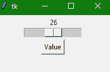
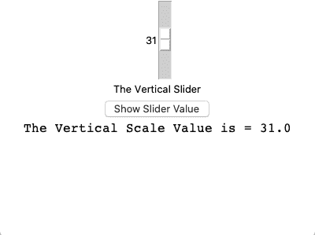

Tkinter 缩放小部件
原文：https://www.studytonight.com/tkinter/python-tkinter-scale-widget
在本教程中，我们将介绍 Python 中的 Tkinter Scale 小部件，该小部件用于添加一个图形滑块对象，用户可以滑动该对象并选择一个数字，因为数值会附加到该滑块标尺上，并且当您上下或左右移动滑块时，附加到其上的数值会增加或减少，您可以将滑块设置为您想要选择的值。
由提供的滑动条刻度部件有助于根据我们应用中滑动条的方向，从左右滑动或从上下滑动来选择数值。
如果输入小部件的目的是在给定的数值范围内从用户处获取数字输入，则刻度小部件用作输入小部件的替代品。
您还可以控制最小和最大值以及标尺的分辨率。
Tkinter 缩放小部件
Tkinter 缩放小部件的语法如下所示:
W = Scale(master, options)
在上面的语法中，master参数表示父窗口。您可以使用许多options来更改刻度部件的布局，这些选项被写成逗号分隔的键值。
Tkinter 缩放小部件选项:
以下是 Tkinter Scale 小部件使用的各种选项:
| 选项名称 | 描述 |
|---|---|
activebackground |
该选项表示小部件处于焦点时的背景颜色。 |
bg |
该选项代表小部件的背景颜色 |
bd |
该选项代表小部件的边框大小。默认值为 2 像素。 |
cursor |
借助该选项，鼠标指针将变为特定的光标类型，可以是箭头、点等。 |
command |
该选项将被设置为每次移动滑块时被称为的程序。如果我们快速移动滑块，当稳定时，回调到程序。 |
digits |
当用于控制刻度数据的控制变量为字符串类型时，则该选项主要用于指定数字刻度转换为字符串时的位数。 |
fg |
该选项表示文本的前景色 |
font |
该选项表示文本的字体类型 |
from_ |
该选项用于表示小部件范围的一端。 |
highlightcolor |
当部件处于焦点下时，该选项指示高亮颜色 |
highlightbackground |
当部件不在焦点下时，该选项指示高亮颜色 |
label |
该选项可以设置为一些文本，然后可以显示为带有刻度的标签。如果刻度是水平的那么它显示在左上角或者如果刻度是垂直的那么它显示在右上角。 |
length |
该选项指示小部件的长度。如果标尺在水平方向上，它代表的 X 维度；如果标尺在垂直方向上，它代表的 Y 维度。** |
relief |
该选项用于指定边框类型。它的默认值是 FLAT |
orient |
根据刻度的类型，该选项可以设置为水平或垂直。 |
resolution |
该选项将被设置为刻度值的最小变化 |
repeatdelay |
该选项主要用于在滑块开始在该方向上重复移动之前告知按钮被按下的持续时间。其默认值为 300 毫秒 |
sliderlength |
该选项表示滑块窗口沿标尺长度的长度。它的默认值是 30 像素。另外，您可以将其更改为适当的值。 |
showvalue |
默认情况下，刻度的值以文本形式显示，我们也可以将此选项设置为 0，以抑制标签。 |
state |
默认情况下，刻度部件的状态为激活状态。要使其无响应，您也可以将其设置为禁用 |
width |
该选项用于表示小部件槽部的宽度 |
variable |
该选项用于表示刻度的控制变量 |
to |
此选项用于代表一个浮点或整数值，指定刻度所代表的范围的另一端 |
takefocus |
一般来说，焦点会在刻度部件中循环。如果你不想要这个行为，你可以将这个选项设置为 0 。 |
tickinterval |
在该选项的帮助下，刻度值显示在指定刻度间隔的倍数上。此选项的默认值为 0。 |
troughcolor |
该选项用于设置波谷的颜色 |
Tkinter 缩放小部件方法
以下是缩放小部件使用的几种方法:
get():此方法用于获取刻度的当前值。
set(value):此方法用于设置刻度值。
Tkinter 缩放小部件-水平示例
下面我们有一个基本的例子，我们将创建一个水平滑动条。
from tkinter import *
win = Tk()
win.geometry("200x100")
v = DoubleVar()
scale = Scale( win, variable=v, from_=1, to=50, orient=HORIZONTAL)
scale.pack(anchor=CENTER)
btn = Button(win, text="Value")
btn.pack(anchor=CENTER)
label = Label(win)
label.pack()
win.mainloop()

在本教程中，我们创建了一个水平缩放小部件。如果您在代码中看到，我们已经为此将orient指定为水平。我们还为滑块刻度指定了数值的范围。
Tkinter 缩放小部件-垂直示例
下面我们有另一个例子，我们将创建一个垂直滑块:
from tkinter import *
win = Tk()
win.geometry("400x300")
v = DoubleVar()
def show():
sel = "The Vertical Scale Value is = " + str(v.get())
# adding scale value to label to show
scale_val.config(text=sel, font=("Courier", 16))
scl = Scale(win, variable=v, from_=60, to=1, orient=VERTICAL)
mainlabel = Label(win, text="The Vertical Slider")
btn = Button(win, text ="Show Slider Value",
command = show,
bg = "darkblue",
fg = "white")
# creating another label to show the scale value
scale_val = Label(win)
scl.pack(anchor = CENTER)
mainlabel.pack()
btn.pack()
scale_val.pack()
win.mainloop()

您可以将滑块从底部移动到顶部，因为它是一个垂直滑块。在给定的例子中，我们还在我们的应用中添加了一个按钮，并且我们定义了一个功能show()，该功能作为事件处理程序附加到按钮部件上。因此，在用户使用滑块选择任何值，然后单击按钮后，该值将显示在按钮下方的标签小部件中。
总结:
在本教程中，我们了解了 Tkinter Scale 小部件，这是一个很好的用户界面组件，用于从最终用户那里获取特定范围内的数字输入值。